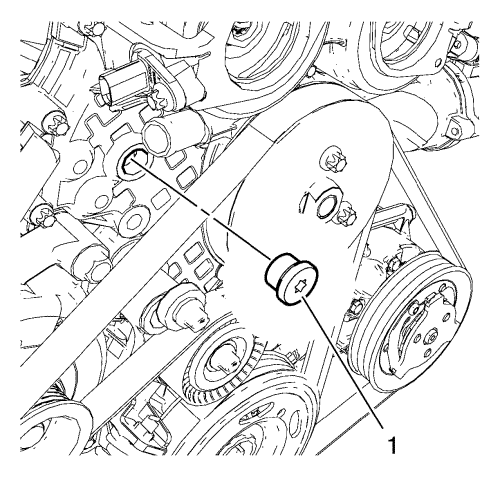
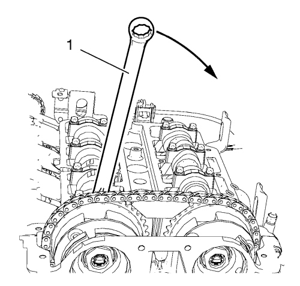
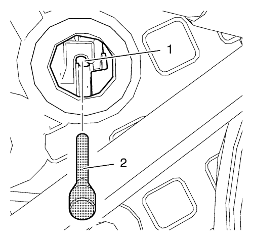
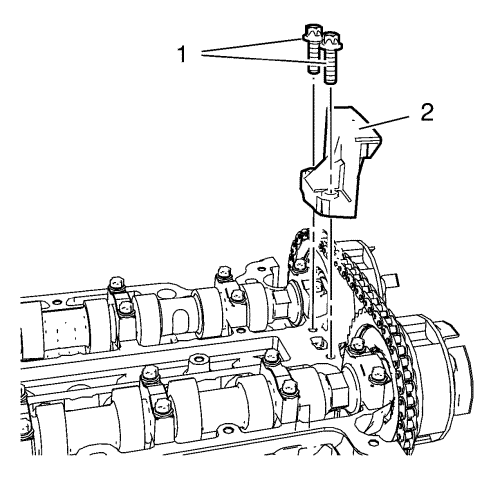
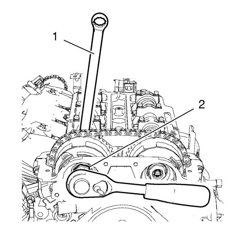
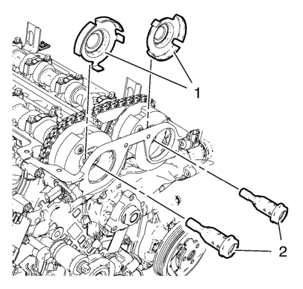
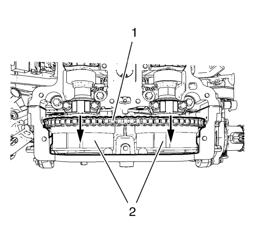
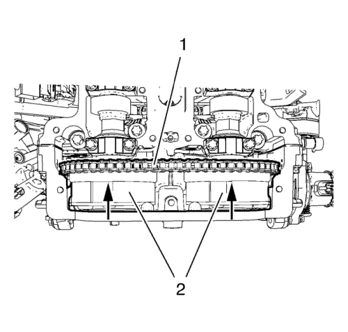

Sustitución de la Rueda Dentada del Escape del Árbol de Levas
Herramienta especial
Pasador de fijación EN-955-1 del kit EN-955
Si desea informarse sobre herramientas regionales equivalentes, consultar Herramientas especiales .
Procedimiento de desmontaje
- Abra el capó.
- Extraiga el conjunto del filtro de aire. Consulte Sustitución del filtro de aire → 1.4L LUH y LUJ.
- Desmontar la tapa del árbol de levas. Consulte Sustitución de la tapa de los árboles de levas → 1.4L LUH y LUJ.
- Desmonte las 2 válvulas solenoides de los actuadores de posición del árbol de levas. Consultar Desmontaje de la válvula solenoide del actuador de posición del árbol de levas .
- Ajuste el motor al PMS. Consulte Inspección de la cadena de distribución del árbol de levas .

- Desmonte el tapón (1) del dispositivo tensor de la cadena de distribución de la cubierta delantera del motor.

- Monte una llave (1) en el hexágono del árbol de levas de admisión y gírela en la dirección de la flecha para tensar la cadena de distribución y sujetarla.

- Instale el pasador (2) EN-955-1 en el orificio (1) del tensor de la cadena de distribución para fijarla en su sitio.
- Saque la llave del árbol de levas de admisión.

- Quite los 2 tornillos de la guía superior de la cadena de distribución (1).
- Desmonte la guía superior (2) de la cadena de distribución.

- Afloje el tornillo del piñón del árbol de levas de admisión (2) mientras sujeta el hexágono del árbol de levas de admisión con una llave (1).
- Afloje el tornillo del piñón del árbol de levas de escape mientras sujeta el hexágono del árbol de levas de escape con una llave.

- Desmonte y DESECHE los 2 tornillos del piñón del árbol de levas (2) y las 2 ruedas del excitador de posición del árbol de levas (1).

- Extraiga los 2 piñones del árbol de levas (2) junto con la cadena de distribución (1) y colóquelos en la cubierta delantera del motor.
- Desmonte el piñón del árbol de levas de escape.
Procedimiento de montaje
- Meta el piñón del árbol de levas de escape en la cubierta delantera del motor y la cadena de distribución.

- Monte los 2 piñones del árbol de levas (2) junto con la cadena de distribución (1) en los árboles de levas.
Precaución:Consulte Precaución de la fijación del par angular y estiramiento en la sección Prólogo.
- Monte los 2 tornillos NUEVOS del piñón del árbol de levas (2) y las 2 ruedas del excitador de posición del árbol de levas (1).
- Retire el pasador EN-955-1 para aplicar tensión a la cadena de distribución.
Nota: El motor debe ajustarse al PMS.
- Apriete los 2 piñones del árbol de levas. Consultar Ajuste de la cadena de distribución del árbol de levas .
- Desmonte todas las herramientas especiales para el ajuste de la cadena de distribución. Consultar Ajuste de la cadena de distribución del árbol de levas .
- Monte la guía superior de la cadena de distribución (2).
Precaución:Consulte Precaución con las fijaciones en la sección Prólogo.
- Monte los 2 tornillos de guía superiores de la cadena de distribución (1) y apriételos a 8 N·m (71 lib. pulg.).
- Monte las 2 válvulas solenoides de los actuadores de posición de los árboles de levas. Consultar Montaje de la válvula solenoide del actuador de posición del árbol de levas
- Monte la tapa del árbol de levas. Consulte Sustitución de la tapa de los árboles de levas → 1.4L LUH y LUJ.
- Monte el tapón del dispositivo tensor de la cadena de distribución y apriételo a 50 N·m (37 lib. pie).
- Monte el conjunto del filtro de aire. Consulte Sustitución del filtro de aire → 1.4L LUH y LUJ.
- Compruebe y corrija el nivel de aceite del motor.
- Cierre el capó.
| © Copyright Chevrolet. All rights reserved |